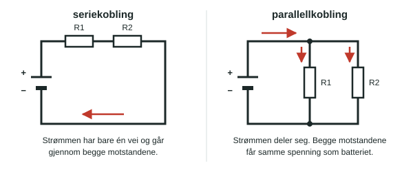
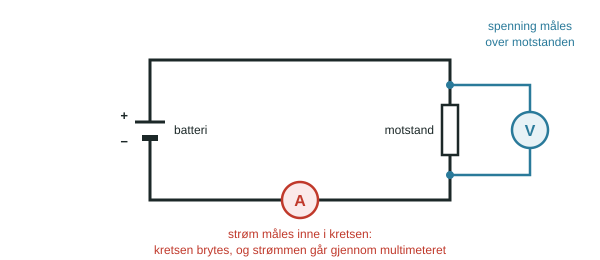

Kretser i serie og parallell
Utstyr kan kobles etter hverandre eller ved siden av hverandre, og det gir helt forskjellig virkning. Her lærer du forskjellen på seriekobling og parallellkobling, og hvordan du måler spenning og strøm med et multimeter.
To måter å koble på
På siden Strøm, spenning og resistans så du en krets med én motstand. Har du to eller flere komponenter, kan de kobles på to måter: i serie eller i parallell.

Seriekobling
I en seriekobling står komponentene etter hverandre, og strømmen har bare én vei å gå.
- Strømmen er like stor overalt. Den samme strømmen går gjennom alle komponentene.
- Spenningen deles. Hver komponent får en del av spenningen. Til sammen blir det like mye som spenningen fra batteriet: \( U = U_1 + U_2 \).
- Resistansene legges sammen: \( R = R_1 + R_2 \). Jo flere komponenter i serie, jo mindre strøm.
- Brudd ett sted stopper alt. Går én komponent i stykker, blir kretsen brutt og strømmen stopper overalt. Slik var det i gamle lysslynger: gikk én pære, ble hele slyngen mørk.
Et eksempel fra anlegget er signalet fra en giver. Giveren, kabelen og inngangen på styresystemet er koblet i serie i en strømsløyfe. Derfor er strømmen den samme gjennom hele kabelen, uansett hvor lang den er. Se Signalet 4–20 mA i Automasjon.
Parallellkobling
I en parallellkobling står komponentene ved siden av hverandre, og strømmen deler seg.
- Spenningen er den samme. Alle komponentene er koblet direkte til strømkilden og får hele spenningen.
- Strømmene legges sammen. Strømmen fra batteriet er summen av strømmene i hver gren: \( I = I_1 + I_2 \).
- Den samlede resistansen blir mindre. Hver ny gren gir strømmen en ekstra vei. Derfor går det mer strøm til sammen, og den samlede resistansen blir mindre enn resistansen i den minste motstanden.
- Hver gren virker for seg. Går én komponent i stykker, virker de andre som før.
Stikkontaktene i et bygg er koblet i parallell. Derfor får alle apparatene 230 V, og du kan slå av ett apparat uten at de andre stopper. Men strømmene legges sammen i kursen. Det er derfor sikringen går når du kobler til for mange apparater, slik du så på siden Elektrisk effekt og energi.
| Seriekobling | Parallellkobling | |
|---|---|---|
| strøm | like stor overalt | deler seg, strømmene legges sammen |
| spenning | deles, spenningene legges sammen | den samme over alle |
| samlet resistans | summen av resistansene | mindre enn den minste |
| én komponent går i stykker | alt stopper | de andre virker |
Kortslutning
En kortslutning er en snarvei for strømmen nesten uten resistans. Det kan skje hvis to ledere kommer borti hverandre, for eksempel når isolasjonen er skadet. Etter Ohms lov blir strømmen svært stor når resistansen er nesten null. Ledningene blir varme, og det kan begynne å brenne. Sikringen skal bryte strømmen før det skjer.
Måling med multimeter
Et multimeter kan måle spenning, strøm og resistans. Du velger hva du skal måle med bryteren på fronten, og setter de to måleledningene i riktige kontakter. Den svarte ledningen står nesten alltid i COM. Den røde flyttes etter hva du skal måle.

| Du skal måle | Bryter | Rød ledning | Slik kobler du |
|---|---|---|---|
| spenning | V med en hel og en stiplet strek for likespenning, som fra et batteri. V~ for vekselspenning. | V-kontakten | over komponenten, parallelt. Kretsen trenger ikke brytes. |
| strøm | A eller mA | A- eller mA-kontakten | inne i kretsen, i serie. Bryt kretsen og la strømmen gå gjennom multimeteret. |
| resistans | Ω | V-kontakten (ofte merket VΩ) | over komponenten, med strømmen av. |
Vet du ikke hvor stor verdien er, starter du med det største måleområdet og går ned til du får en tydelig verdi. Mange multimetre gjør dette selv. Måler du strøm i mA og verdien er for stor, kan sikringen inne i multimeteret gå.
Forsøk: Serie og parallell på koblingsbrettet
Utstyr: koblingsbrett, batteri på 9 V, to motstander på 1,0 kΩ og 2,0 kΩ, ledninger og multimeter. 1 kΩ (kiloohm) er 1000 Ω.
Før du kobler: Mål spenningen på batteriet. Et nytt batteri på 9 V gir ofte litt mer enn 9 V. Regn ut verdiene i tabellen med Ohms lov. Bruker du den målte batterispenningen, blir det lettere å sammenligne.
Seriekobling:
- Samlet resistans: \( R = 1000 \ \Omega + 2000 \ \Omega = 3000 \ \Omega \)
- Strømmen: \( I = \dfrac{U}{R} = \dfrac{9{,}0 \text{ V}}{3000 \ \Omega} = 0{,}0030 \text{ A} = 3{,}0 \text{ mA} \)
- Spenningen over R1: \( U_1 = R_1 \cdot I = 1000 \ \Omega \cdot 0{,}0030 \text{ A} = 3{,}0 \text{ V} \)
- Spenningen over R2: \( U_2 = 2000 \ \Omega \cdot 0{,}0030 \text{ A} = 6{,}0 \text{ V} \). Kontroll: 3,0 V + 6,0 V = 9,0 V.
Parallellkobling:
- Begge motstandene får 9,0 V.
- Strømmen gjennom R1: \( I_1 = \dfrac{9{,}0 \text{ V}}{1000 \ \Omega} = 0{,}0090 \text{ A} = 9{,}0 \text{ mA} \)
- Strømmen gjennom R2: \( I_2 = \dfrac{9{,}0 \text{ V}}{2000 \ \Omega} = 0{,}0045 \text{ A} = 4{,}5 \text{ mA} \)
- Strømmen fra batteriet: \( I = 9{,}0 \text{ mA} + 4{,}5 \text{ mA} = 13{,}5 \text{ mA} \)
Samlet resistans i parallell kan du finne med Ohms lov: \( R = \dfrac{9{,}0 \text{ V}}{0{,}0135 \text{ A}} \approx 670 \ \Omega \). Det er mindre enn den minste motstanden på 1000 Ω.
| Kobling | Hva du måler | Beregnet | Målt |
|---|---|---|---|
| serie | strøm i kretsen | 3,0 mA | |
| spenning over R1 | 3,0 V | ||
| spenning over R2 | 6,0 V | ||
| parallell | spenning over R1 og R2 | 9,0 V | |
| strøm gjennom R1 | 9,0 mA | ||
| strøm gjennom R2 | 4,5 mA | ||
| strøm fra batteriet | 13,5 mA |
Etter forsøket:
- Stemmer de målte verdiene med de beregnede? Hvor stort er avviket?
- Hva kan avviket komme av? Tenk på batterispenningen, at motstandene sjelden har nøyaktig den verdien som står på dem, og usikkerheten i multimeteret.
- Stemmer det at spenningene i seriekoblingen legges sammen, og at strømmene i parallellkoblingen legges sammen?
Hold aldri målepinnene rett over et batteri når multimeteret står på strøm (A eller mA). Mål aldri i en stikkontakt. Da går nesten all strømmen gjennom multimeteret, og det blir en kortslutning. Flytt den røde ledningen tilbake til V-kontakten når du er ferdig med å måle strøm. Kortslutter du et batteri, kan det bli varmt eller begynne å brenne. På skolen måler du bare på lav spenning, som batterier og koblingsbrett. Etter norske regler skal arbeid på elektriske anlegg gjøres av elektrofagfolk i en registrert elvirksomhet. Les mer på siden Elektrisk sikkerhet.
Test deg selv
To motstander er koblet i serie. Hva er like stort i begge?
- strømmen
- spenningen
- resistansen
I en seriekobling har strømmen bare én vei, så den samme strømmen går gjennom begge motstandene. Spenningen deles mellom dem.
To lamper er koblet i parallell til et batteri. Hva er like stort for begge lampene?
- strømmen
- spenningen
- ingenting
I en parallellkobling er alle komponentene koblet direkte til strømkilden, så de får den samme spenningen. Strømmen deler seg.
To motstander er koblet i serie til et batteri på 12 V. Spenningen over den ene er 4,0 V. Hvor stor er spenningen over den andre?
- 4,0 V
- 8,0 V
- 12 V
I en seriekobling legges spenningene sammen og blir like mye som batterispenningen: 12 V − 4,0 V = 8,0 V.
To apparater er koblet til den samme kursen. Det ene trekker 3,0 A og det andre 5,0 A. Hvor stor strøm går i kursen?
- 2,0 A
- 5,0 A
- 8,0 A
Stikkontaktene er koblet i parallell, og da legges strømmene sammen: 3,0 A + 5,0 A = 8,0 A.
Hvordan kobler du multimeteret når du skal måle strømmen i en krets?
- Over komponenten, uten å bryte kretsen.
- Inne i kretsen, slik at strømmen går gjennom multimeteret.
- Rett over batteriet.
Strøm måles i serie. Du bryter kretsen og setter multimeteret inn der, slik at strømmen går gjennom det. Rett over batteriet blir det kortslutning.
Ordliste
| Begrep | Forklaring | Engelsk |
|---|---|---|
| seriekobling | Komponentene er koblet etter hverandre, slik at strømmen bare har én vei. Den samme strømmen går gjennom alle. | |
| parallellkobling | Komponentene er koblet ved siden av hverandre, slik at strømmen deler seg. Alle får den samme spenningen. | |
| kortslutning | En snarvei for strømmen nesten uten resistans. Strømmen blir svært stor, og ledningene kan bli varme eller begynne å brenne. | short circuit |
| multimeter | Et måleinstrument som kan måle spenning, strøm og resistans. | multimeter |
Les mer
- På neste side, Øv: Kretsbygger, bygger du kretser i en simulator.
- Signalet 4–20 mA i Automasjon viser en seriekrets i anlegget.
Om kildene: Teksten, eksemplene, forsøket og figurene på denne siden er laget for dette nettstedet. Siden bygger på undervisningsopplegg i kjemiprosess- og laboratoriefag ved Sauda vgs, som er utarbeidet med utgangspunkt i blant annet Kjemien stemmer, Laboranten og åpne nettkilder.